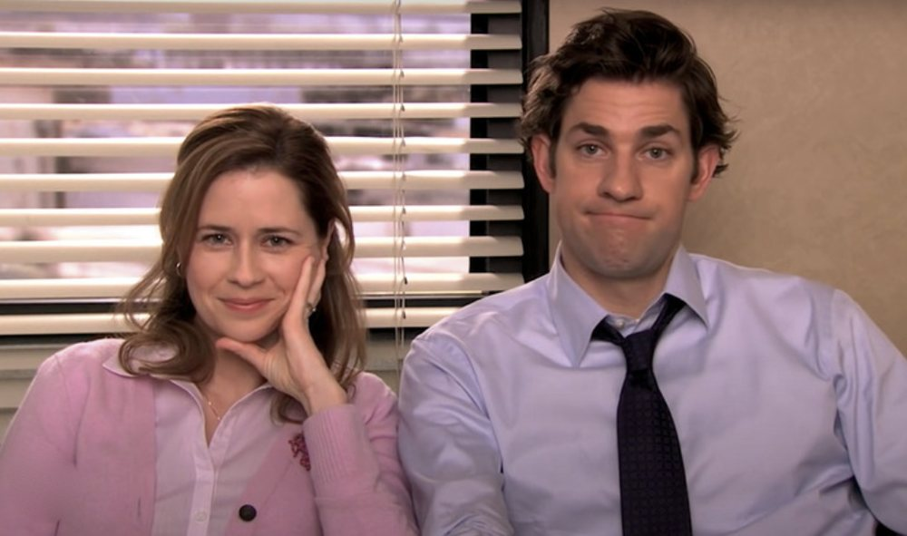
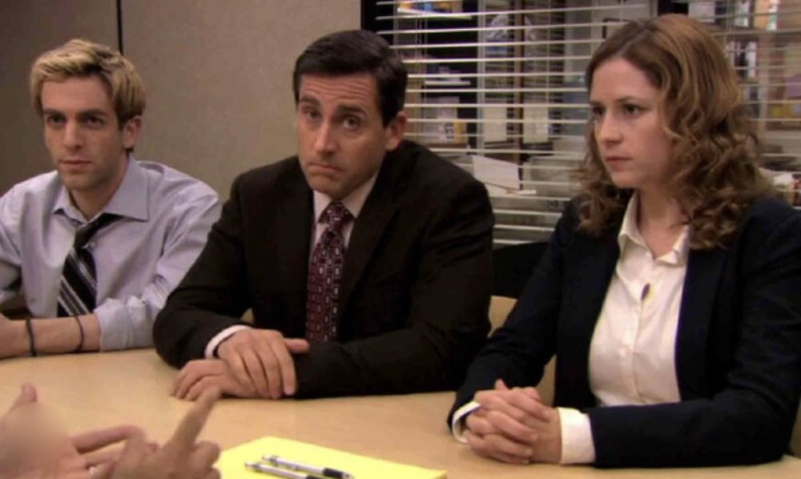
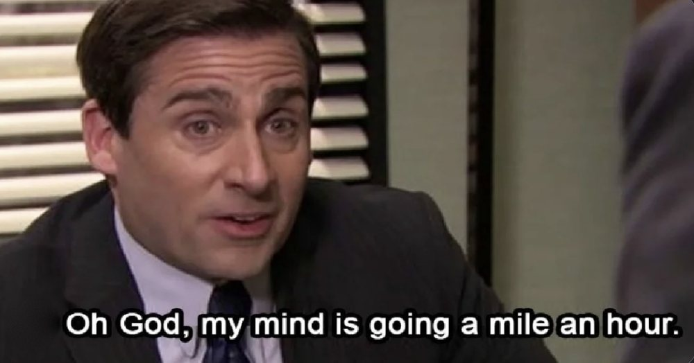
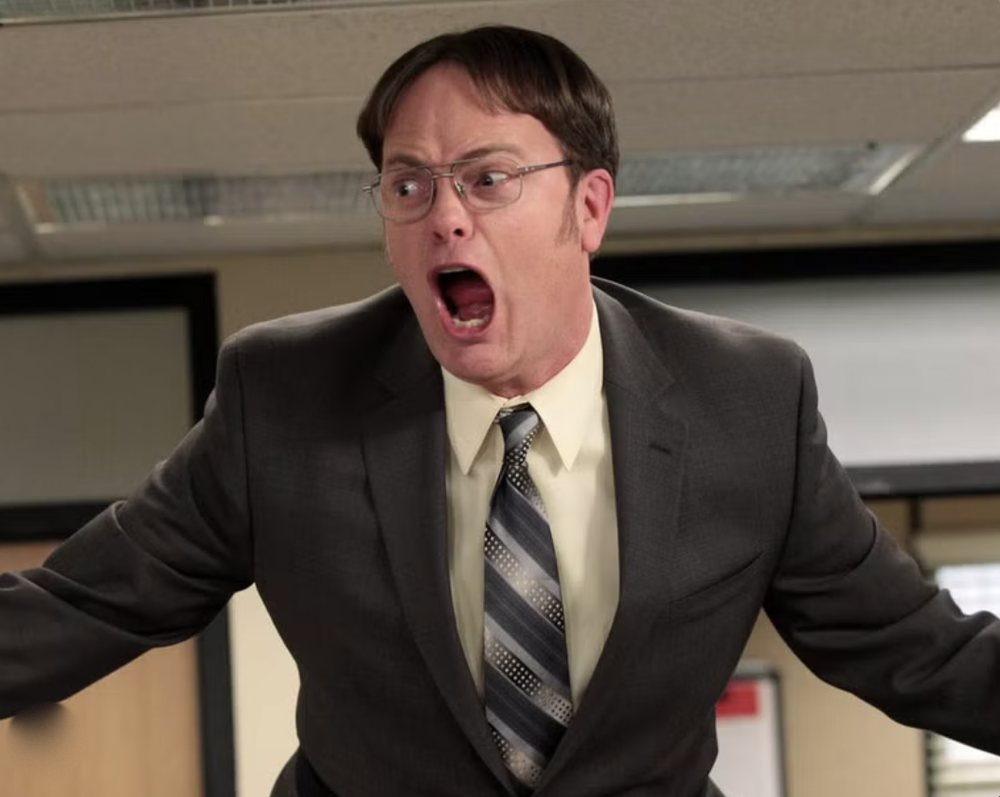
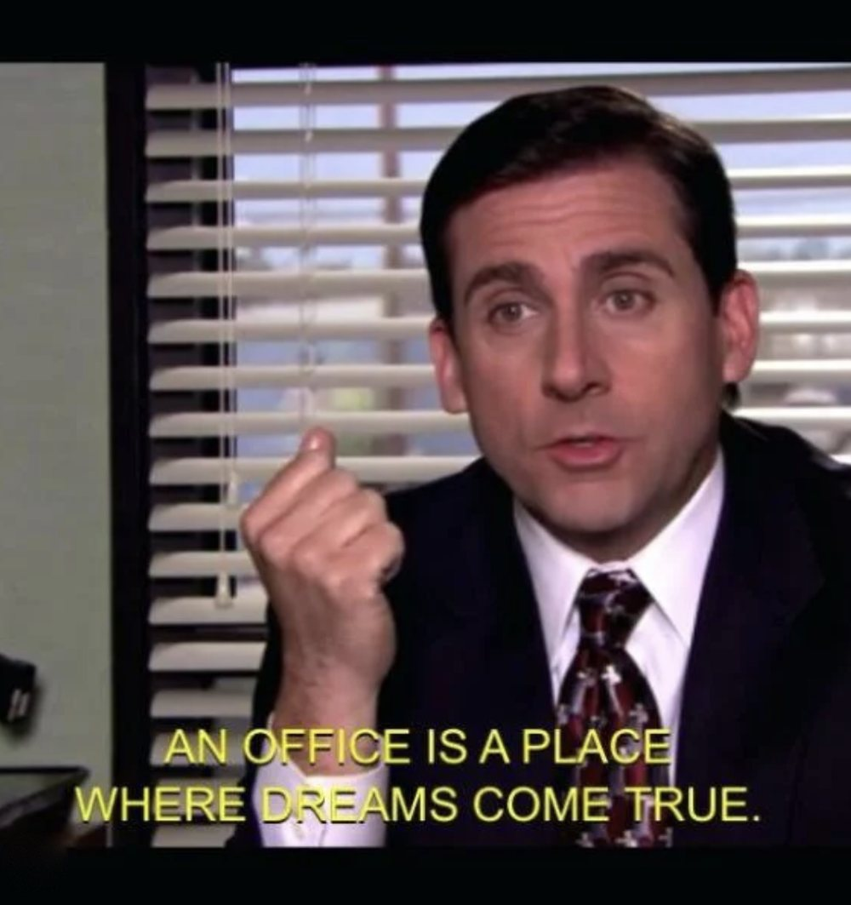
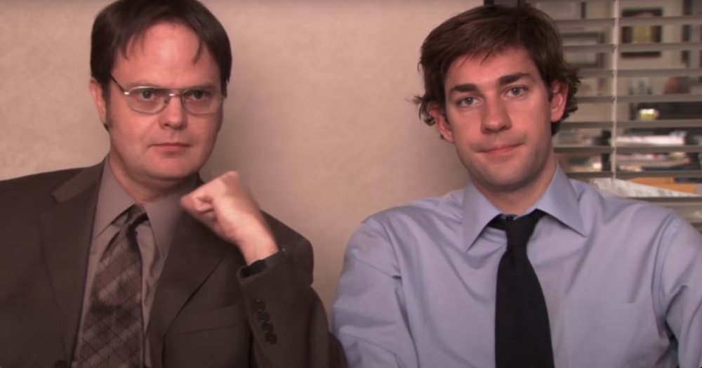
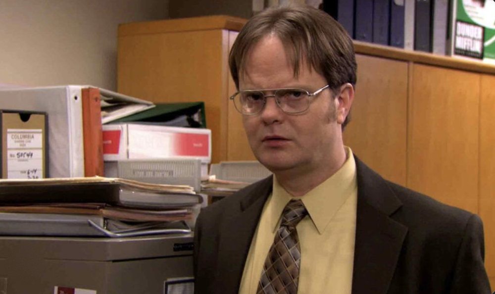
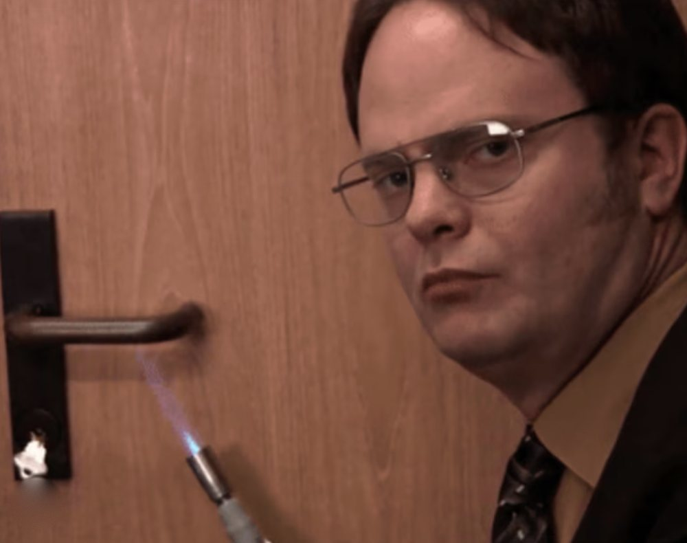
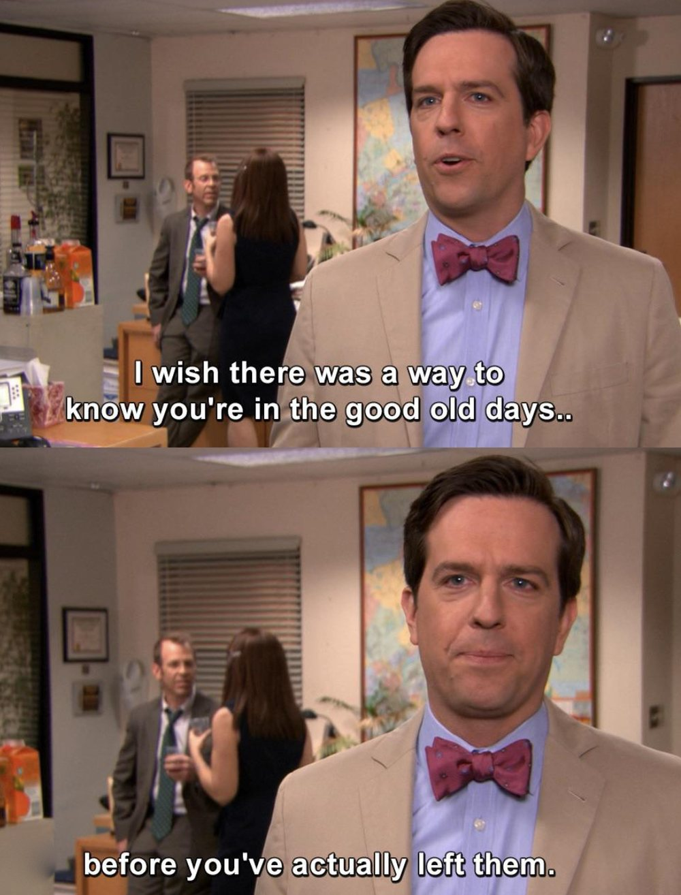

To rozmowa, nie egzamin.
Screening z HR to zwykle spokojne poznawanie się: kim jesteś, czego szukasz i jak widzisz tę rolę. Nikt nie liczy punktów za każde słowo.
Memo nr 001 / odprawa przed rozmową z HR
Pierwszy etap to krótka rozmowa z osobą z HR: zwykle ludzka pogawędka o Tobie, Twoich oczekiwaniach i tym, czy będzie Wam po drodze. Przygotowaliśmy dla Ciebie krótką odprawę: 3 minuty czytania i bardzo dużo otuchy.

Trzy dobre wiadomości na start
Screening z HR to zwykle spokojne poznawanie się: kim jesteś, czego szukasz i jak widzisz tę rolę. Nikt nie liczy punktów za każde słowo.
Osoba z HR chce, żeby rozmowa poszła dobrze, bo każdy trafiony kandydat to jej sukces. Gracie do tej samej bramki.
Samo zaproszenie na rozmowę znaczy, że Twoje CV zrobiło dobre wrażenie. Teraz wystarczy opowiedzieć o sobie własnymi słowami.

W głowie: panel jak z Dunder Mifflin. Wszyscy patrzą, nikt nie mruga.
W rzeczywistości: jedna sympatyczna osoba z HR, która chce Cię poznać.
Odprawa przed lotem
Kim jesteś zawodowo, co robisz najchętniej i co Cię ciekawi w tej roli. Trik: wymyśl pięć słów, które Cię opisują. Dwight zrobił z tego cały akrostych, Ty możesz to zrobić subtelniej.
Jedno, dwa szczere zdania. Prawdziwa ciekawość działa lepiej niż wyuczone formułki.
Na przykład o zespół, z którym będziesz pracować, albo o pierwsze miesiące w tej roli. Dobre pytanie pokazuje zaangażowanie i zamienia rozmowę w dialog.
Checklista przed startem
Zaznaczaj po kolei. Gdy zaświecą się wszystkie, możesz lecieć.
Zaznacz, co już masz gotowe.
Gdy głowa pracuje na wysokich obrotach


Wdech przez 4 sekundy, wydech przez 6. Trzy razy, tuż przed rozmową.
„Dobre pytanie, zastanowię się sekundę” brzmi bardzo profesjonalnie.
„Nie wiem, ale wiem, jak bym to sprawdził” to świetna odpowiedź.
Pierwsze dwie minuty są najbardziej stresujące. Potem rozmowa sama się rozkręca.

Słowa wsparcia od regionalnego managera
“An office is a place where dreams come true.”
Dowody wizualne



Plan operacyjny
Śniadanie, kawa i spokojny start. Bez czytania czterdziestu siedmiu poradników naraz.
Szklanka wody, trzy głębokie oddechy i jeszcze jedno spojrzenie na te trzy kroki.
Bądź sobą. Słuchaj, uśmiechaj się i pytaj o to, co Cię naprawdę ciekawi.
Dobra robota, niezależnie od wyniku. Wróć do nas po pochwały. Mamy ciastka.
Na koniec
Niezależnie od tego, jak pójdzie, dzisiaj zrobisz krok do przodu. A my będziemy trzymać kciuki tak mocno, że Dwight zacznie się martwić.
P.S. Andy radzi: doceń ten moment, zanim zmieni się w „stare dobre czasy”.
Cała ekipa Dunder Mifflin 🦌🐎
